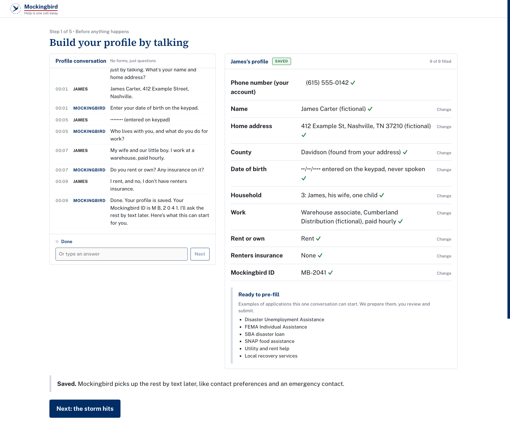
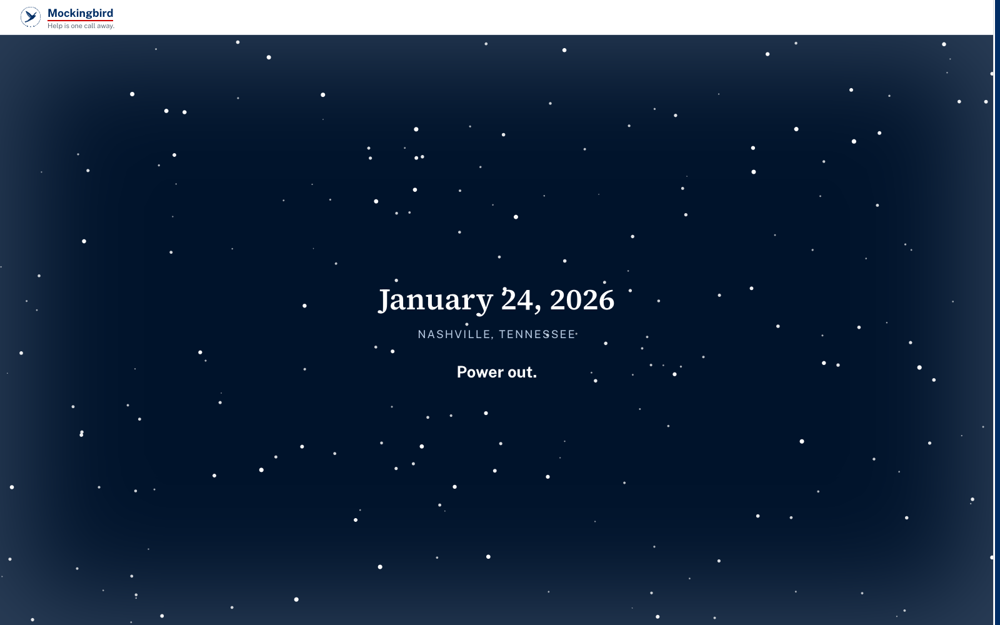
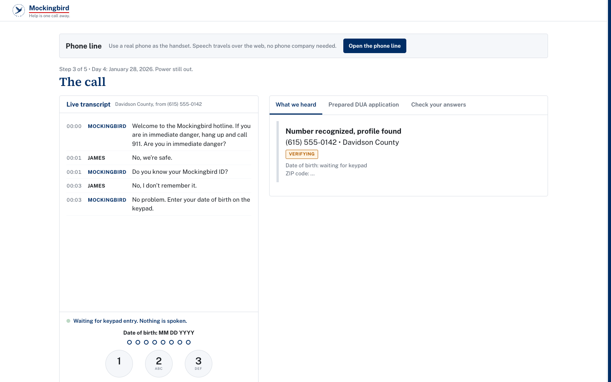
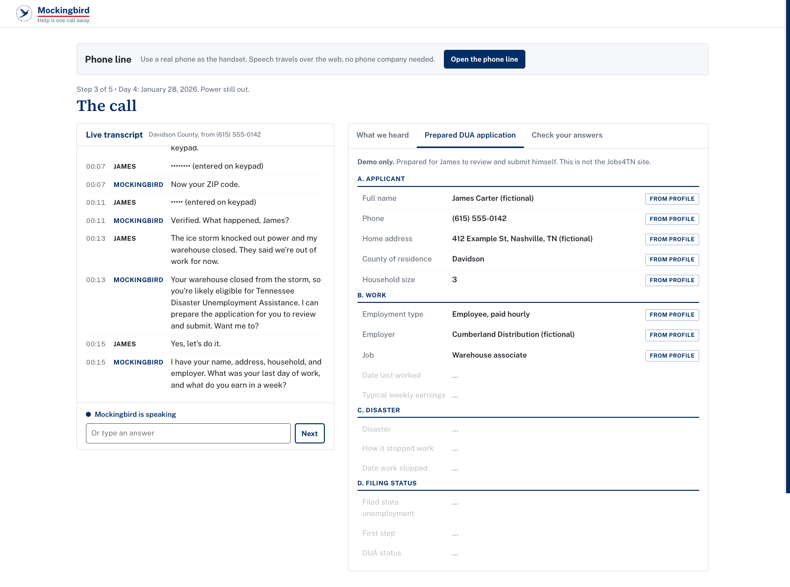
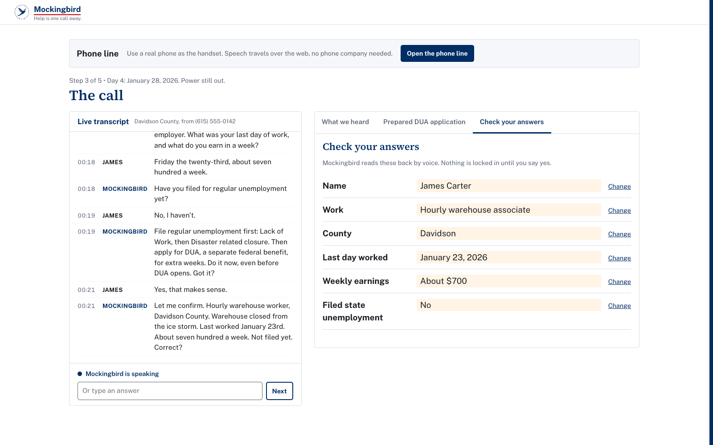
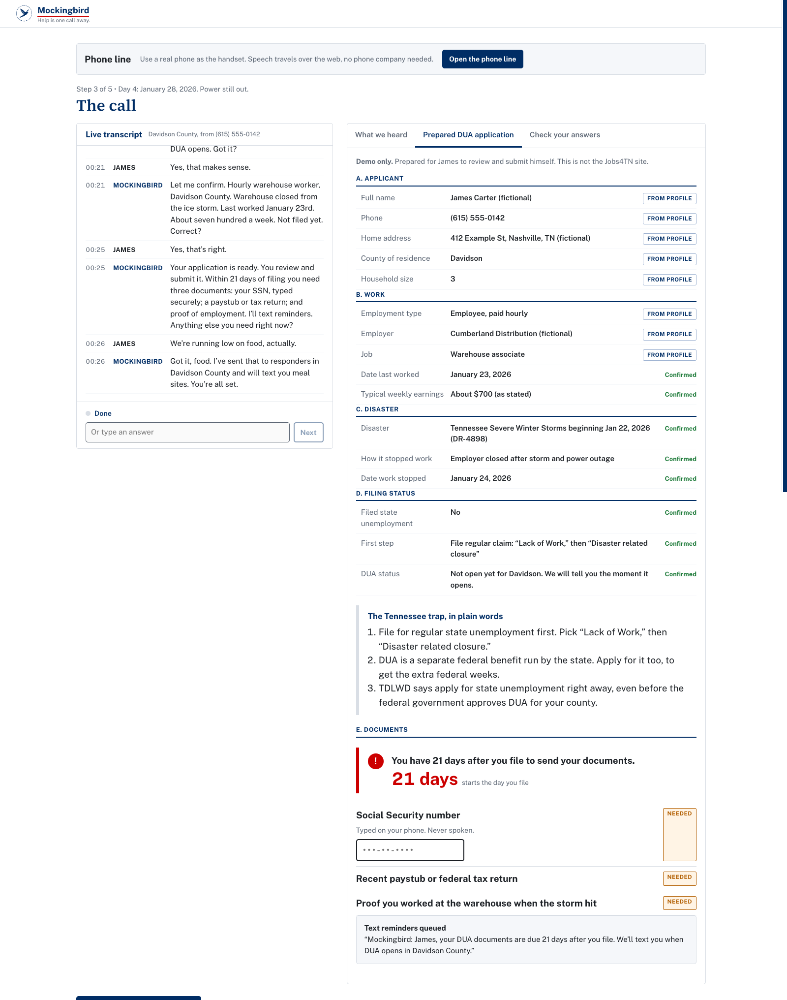
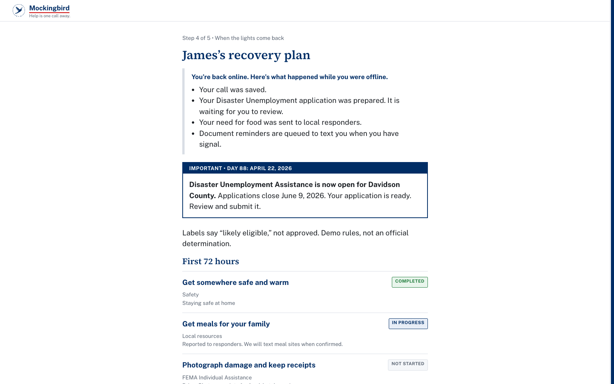
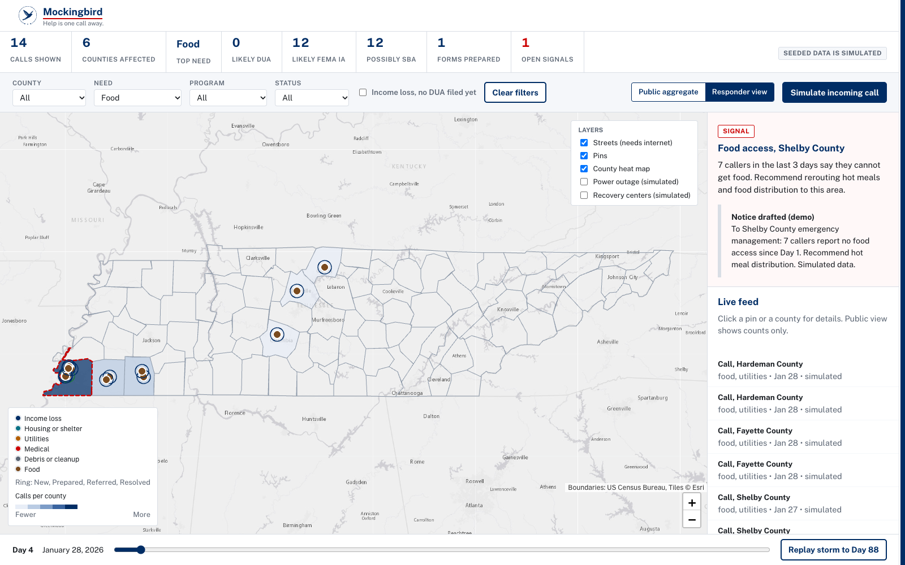
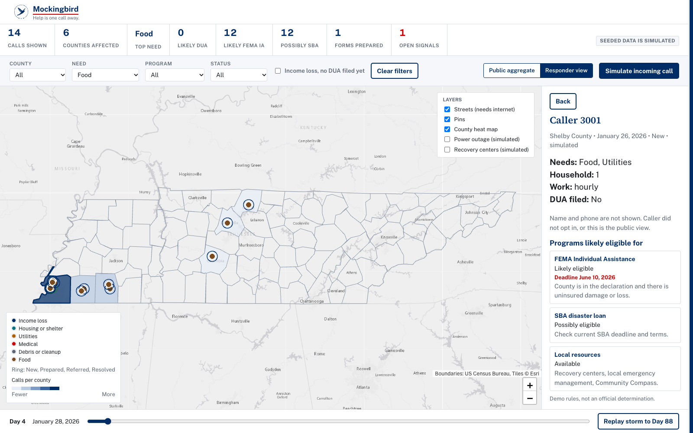

Back to the main deck. Everything shown is fictional or simulated. Eligibility labels are demo rules, not an official determination.
| Fact | What we state | Source |
|---|---|---|
| Winter Storm Fern | Severe winter storms began Jan 22, 2026. The ice storm hit Middle Tennessee Jan 24. Federal disaster declaration FEMA DR-4898. | TEMA |
| FEMA Individual Assistance | Added for 29 Tennessee counties more than two months after the storm. Deadline to apply was June 10, 2026. | WKRN, WSMV |
| Disaster Unemployment Assistance (DUA) | TDLWD opened DUA for 29 counties on April 22, 2026, with applications open until June 9, 2026. Computed: Jan 24 to Apr 22 is 88 days. | TDLWD |
| How to apply | Through Jobs4TN. State unemployment first: select “Lack of Work,” then “Disaster related closure.” DUA applications come after, if the county is approved. | TDLWD |
| DUA documents | Due within 21 days of filing: SSN, most recent federal income tax form or paycheck stubs, and documentation showing the person was working or self-employed when the disaster occurred. | TDLWD (2025 release) |
| DUA vs regular unemployment | DUA is a federal program administered by the state. Regular unemployment and DUA cannot be paid at the same time. | TDLWD |
| Fact | What we state | Source |
|---|---|---|
| Power outages | NES reported 57,000 customers still without power nearly a week after the storm, and 22,000 still out more than a week after. | ABC News 4, NewsChannel 9 |
| Relief that came | FEMA approved about $23.7 million for 10,563 households in May 2026. | WVLT |
| Applicants, 2016 to 2018 | 5.6 million people applied for FEMA disaster assistance (4.4 million referred to the Individuals and Households Program). | GAO-20-503, Sept 30, 2020 |
| Survivor confusion | FEMA, state, territory, and local officials reported that survivors “did not understand and were frustrated by” the SBA loan requirement. | GAO-20-503, Sept 30, 2020 |
| Not used | The GAO page gives two different counts of ineligible applicants (about 1.7 million and about 2.4 million) and does not reconcile them, so we do not quote either. | GAO-20-503 |
| Not verified, never stated | The exact screens of the live Jobs4TN claim flow. Current mailing or fax for documents. Whether any specific person qualifies. Any statistic not on this page. | n/a |
GAO items were added after the original brief and read from the GAO product page on Nov 6, 2026.
Source: TEMA via WKRN, April 2026. All 95 counties were designated for FEMA public assistance or emergency protective measures. The team still plans to cross-check this list against TEMA directly.
The AI extracts facts from what the caller says. A small rules module, not the AI, decides the label. These are demo rules, not an official determination.
Every label says likely or possibly, never “approved,” and links back to the program's own rules. The same facts always give the same label, so results are predictable and explainable.
| Layer | What it is today |
|---|---|
| Web app | React, Vite, Leaflet. |
| Hearing the caller | Browser speech recognition (Chrome, needs internet) for live transcription on screen. |
| The AI voice | Text-to-speech. Voice lines are pre-generated and cached on disk, with the browser voice as a fallback, so the demo can run offline. |
| The phone | A simulated handset: the caller's speech and keypad taps travel over the web to the demo screen instead of through a phone carrier. Production would use Twilio voice and SMS. |
| Conversation | Scripted by intent for the demo. The AI's questions and the form values are pre-written, and the caller can phrase answers any way. |
| Eligibility | A rules module decides labels and deadlines (see A4). |
| Map | US Census county boundaries, Esri Light Gray basemap, about 50 seeded simulated callers labeled simulated everywhere. |
| Roadmap | Claude for real conversation and fact extraction. Live monitoring of declarations. Twilio voice and SMS. State and county responder dashboards. |









Captured from the running demo. All people and callers are fictional or simulated.